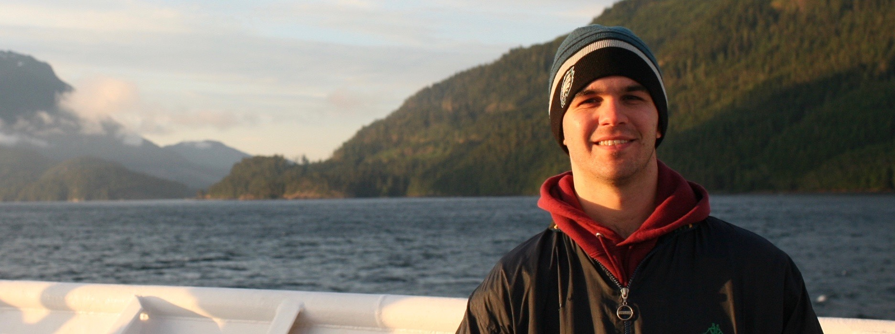

About Me
Hello! I am a marine biogeochemist with a particular interest in carbon cyclimg and ocean acidification. Currently, I am a postdoctoral scholar at the University of Washington Cooperative Institute for Climate, Ocean, and Ecosystem Studies (CICOES) and I work in conjunction with NOAA's Pacific Marine Environmental Laboratory (PMEL). My research focuses on the biogeochemistry of the California Current Large Marine Ecosystem (CCLME). I am using measurements from robotic profiling floats to quantify primary production, carbon export, and community respiration in the CCLME.
My previous work has focused on developing and advancing novel methods for marine carbonate system measurements and on improving thermodynamic consistency. I performed this work while pursuing my PhD from the University of South Florida College of Marine Science, which I earned in 2020.
